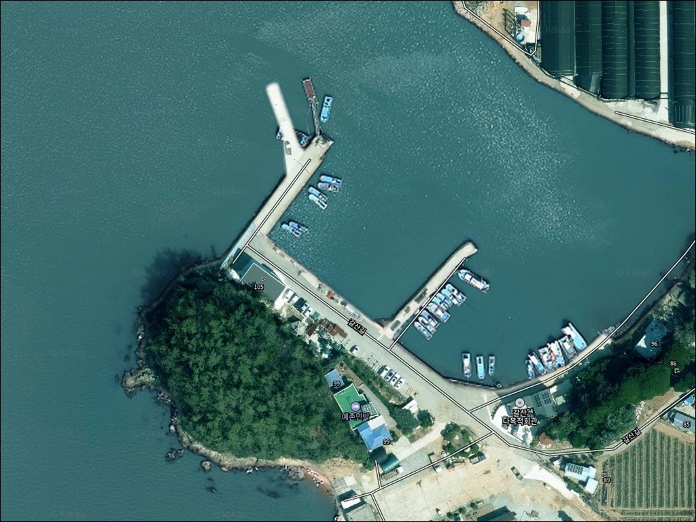
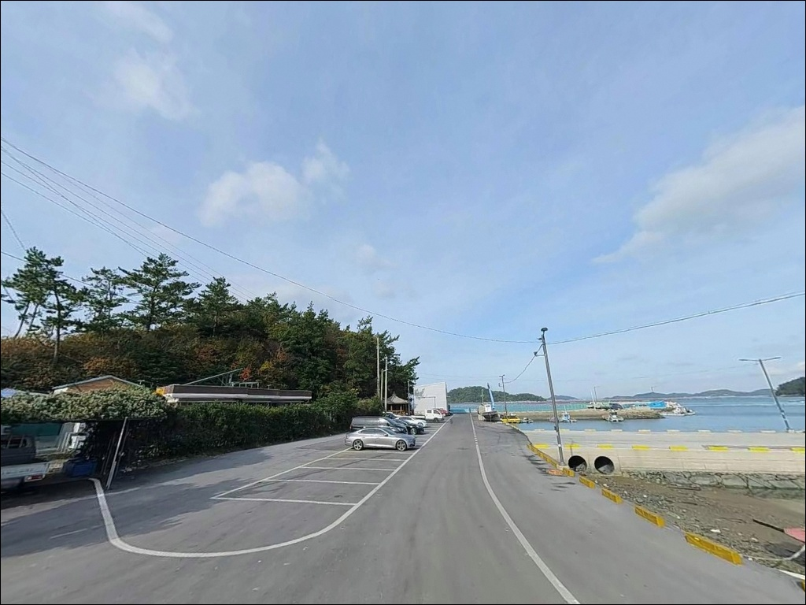
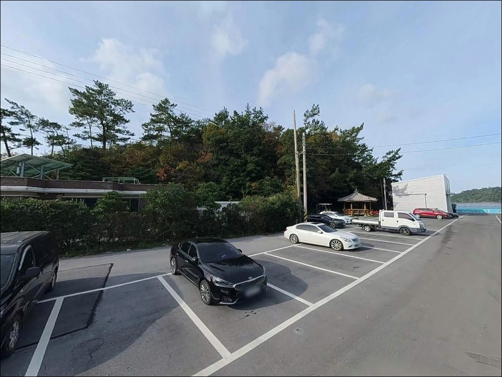
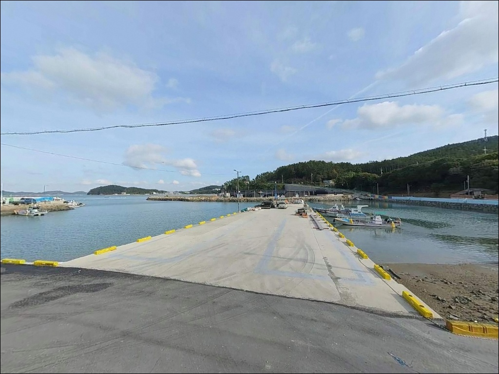
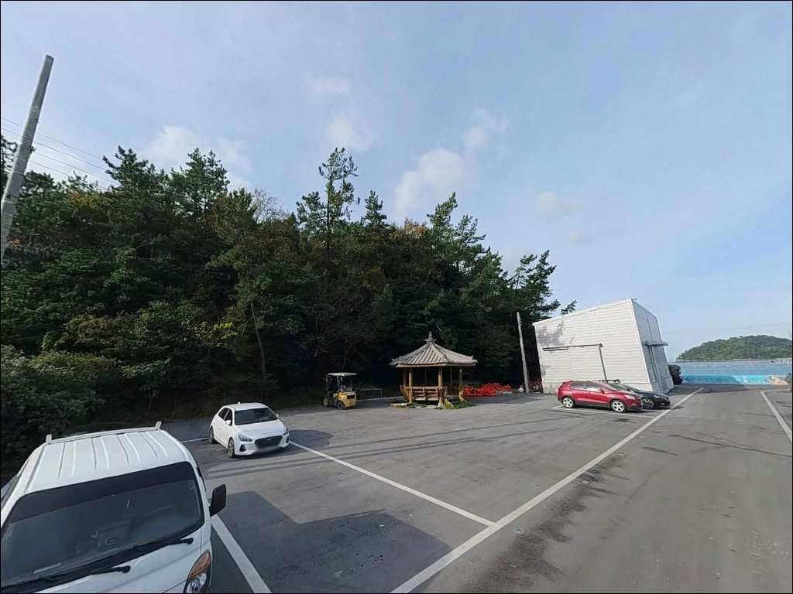
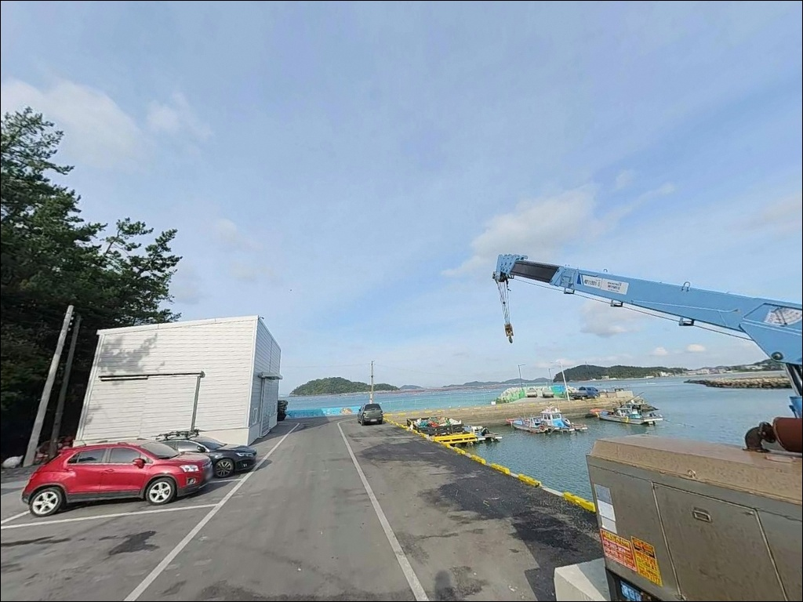
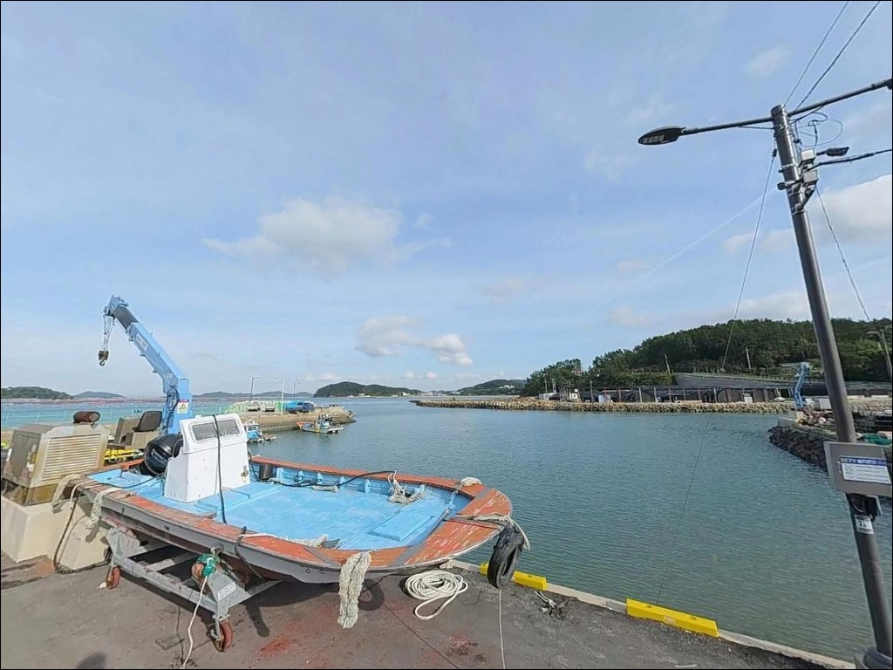
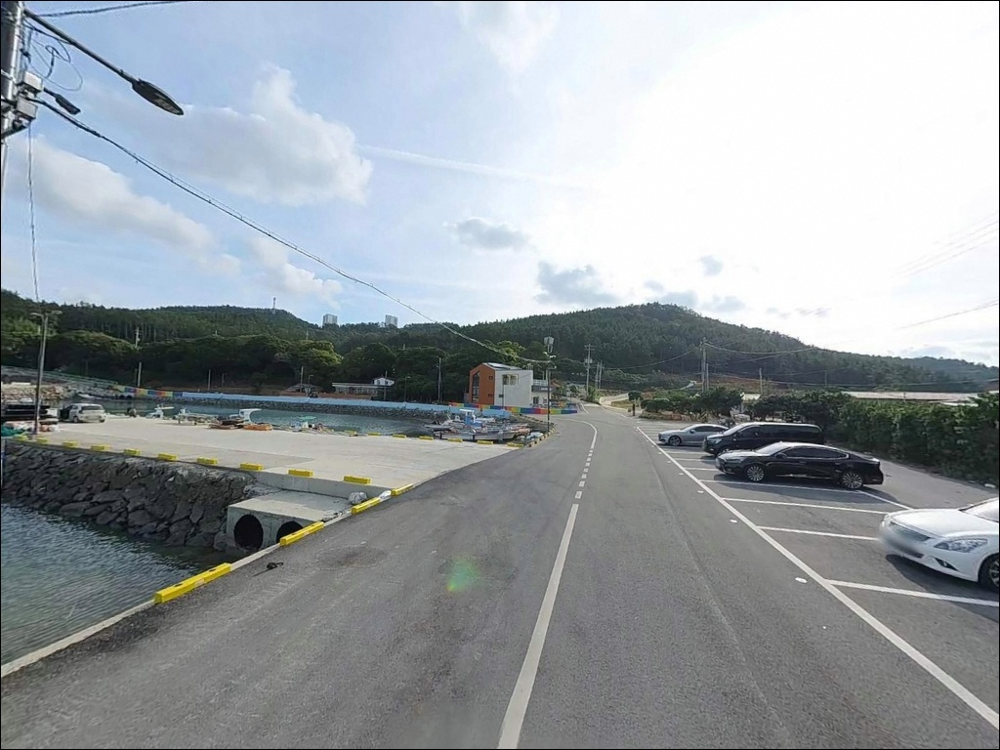
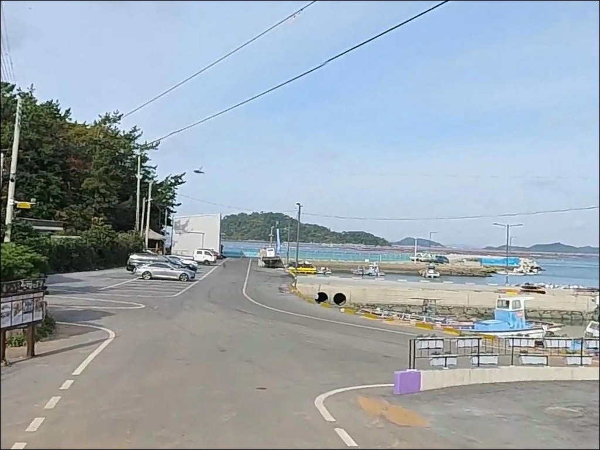

갈산 선착장, 갈산방파제, 전남 해남군 낚싯대 하나 들고 떠나는 바다 차박 낚시 스팟
이 페이지에는 광고(제휴 링크 포함)가 있으며, 광고 링크를 통해 구매하면 운영자가 판매 수익 또는 수수료를 받을 수 있습니다. 포인트 사진: 카카오맵 스카이뷰·로드뷰. 이 페이지의 지도·사진 이미지는 카카오맵의 실제 서비스 이미지와 다를 수 있습니다.


포인트 안내
갈산 선착장(갈산방파제)
전남 해남군 송지면 송호리 1220-33
다도해와 직접 면한 소규모 선착장은
간조 전후에 외항 수심이 급격히 낮아지는 구조입니다.
물때 계산 없이 진입하면
자리를 잡기 전에
낚시 가능한 구간이 절반 이하로 줄어드는
상황이 벌어집니다.
갈산 선착장은 해남 땅끝 권역에서
아직 많이 알려지지 않은 포인트입니다.
갈두항(땅끝항)에서 북쪽으로 약 1.5km,
땅끝길 산책로와 이어지는
갈산마을 앞 방파제 구조로
조용히 탐색해 두기 좋은 자리입니다.
이 글은 갈산 선착장의
진입 환경, 지형 기반 낚시 여건,
차박 체류 조건을 중심으로 정리합니다.
조황 단정이나 어종 보장은
이 글의 범위에 포함되지 않습니다.

1. 진입 동선과 포인트 접근성
갈산마을은 땅끝오토캠핑장 앞에서
갈산길을 따라 약 500m 안쪽으로 진입하는 구조입니다.
마을 안길 특성상 폭이 좁은 구간이 포함되어 있어
대형 SUV나 캠핑 세팅 차량이라면
출발 전 위성지도로 진입 동선을
미리 확인하는 것이 기본 조건입니다.
선착장까지 차량 진입은 가능하나
회차 공간이 넉넉하지 않습니다.
마을 입구 진입 전
후진 진출 가능 여부를 미리 판단해 두면
현장에서의 불필요한 시간 낭비를
막을 수 있습니다.
주차는 선착장 인근 공터 또는
마을 진입로 도로변을 활용하는 방식이 현실적입니다.
어선 작업 동선을 막지 않는 자리가 우선이며,
2~3대 수준의 소규모 공간으로
동시 방문 인원이 많으면 여유가 없습니다.

2. 차박 환경과 야간 체류 여건
갈산마을은 실제 거주 어촌입니다.
민가가 인접해 있어 야간 체류 시
소음과 주차 예의에 특히 신경 써야 합니다.
프라이버시 수준은 낮은 편이며,
조용한 단독 차박지보다는
낚시 후 짧게 머무는 용도로
접근하는 편이 현실적입니다.
다도해 내만에 면한 구조라
직접적인 너울이나 강풍 영향은
비교적 제한적인 편입니다.
다만 외해 노출 지역 특성상
기상에 따라 바람이 강해지는 경우도 있어
당일 기상 확인은 기본 체류 조건입니다.
야간 조명은 마을 가로등 수준으로
완전한 암흑 환경은 아니지만,
개인 헤드랜턴은 반드시 챙겨야 합니다.
선착장 가장자리와 석축 구간은
야간에 미끄럼 위험이 있어
이동 시 주의가 필요합니다.


3. 주변 편의시설 및 인프라 현황
갈산 선착장 반경 1km 이내에는
편의점이나 식당을 기대하기 어렵습니다.
반경 3km, 땅끝송호해변 방향으로 이동하면
해수욕장 시즌 운영 기준
공중화장실 5동, 주차장 4개소가
공식 확인되는 시설입니다.
땅끝마을 권역 내 편의점이 있으나
개별 운영 여부는 방문 전 확인이 필요합니다.
식수, 얼음, 낚시 소품은
출발 전에 완비하고 진입하는 것이
안전한 준비 방식입니다.
갈산마을 내 땅끝바다낚시터&글램핑(갈산길 95)은
조수간만을 이용한 인공 바다낚시터와
글램핑 시설을 함께 운영하는 유료 시설입니다.
갈산 선착장과는 별개 시설이며,
인근 거점 시설로 참고할 수 있습니다.

4. 진입 전 반드시 챙겨야 할 준비사항
갈산 선착장을 처음 찾는다면
출발 전 물때 확인이 가장 먼저입니다.
다도해 내만 특성상 조간대 구간이 형성되는 지형으로,
바다타임에서 송지면 인근 물때를 확인하고
들물 전후 타이밍에 맞춰
출발 시각을 조정하는 것이 기본 전략입니다.
선착장 주변 구조물과 석축은
이끼와 물때가 끼어 미끄러운 구간이 있습니다.
야간 낚시라면 헤드랜턴과 구명조끼는
선택이 아닌 필수 장비입니다.
다도해 청정수역 특성상
채비 손실이 잦을 수 있으므로
여분 채비는 넉넉하게 준비하는 편이 좋습니다.
갈산마을은 실제 어업이 이뤄지는 생활 선착장입니다.
어선 출입 시간에는 작업 공간을 비워두고,
쓰레기는 반드시 완전히 수거해서
나간 뒤 흔적이 남지 않도록 하는 것이
기본 매너입니다.

5. 외항 자리에서 조과가 달라지는 조건
갈산 선착장은 다도해와 직접 면하는 구조로
방파제 끝단이 핵심 포인트입니다.
끝단 외항 방향은 내항보다 수심이 있고
조류 흐름이 살아 있어
채비가 안정적으로 흘러가는 조건을
갖추는 구간입니다.
방파제 끝단 기준 수심은
3~5m 내외 수준으로 형성되는 지형이며,
조류 영향이 있는 수로 방향 구간에서
바닥 지형 변화 구간이 나타납니다.
내항 쪽은 정박 어선 사이 공간으로
조류가 약하고 수심이 얕은
찌낚시 여건에 가깝습니다.
선착장 옆 자연 석축 구간도
탐색해볼 만한 자리입니다.
바닥이 고르지 않고 암초 성격이 섞인 지형에서
루어 반응이 나타날 수 있는 조건입니다.
출조 전 갈산방파제·송지면 일대 조황은
반드시 검색해 보시기 바랍니다.


6. 포인트에 어울리는 낚시 스타일
이 포인트에서 가장 무난하게 활용할 수 있는
방식은 원투낚시입니다.
방파제 외항 방향으로 멀리 채비를 보내
도다리, 붕장어 계열 바닥 어종을
노리기에 적합한 지형 조건입니다.
조류가 느려지는 정조 전후를 기준으로
채비를 안착시키는 방식이 유효합니다.
찌낚시는 방파제 끝단과
내항·외항 경계 구간에서 활용하기 좋습니다.
다도해 내만 특성상 잔잔한 날
수면 흐름이 찌낚시 채비에 자연스럽게 맞는 편이며,
감성돔 시즌을 노리는 낚시인이라면
방파제 끝단 외항 쪽을 먼저 살펴볼 구간입니다.
에깅과 볼락 루어낚시도 가능한 스타일입니다.
다도해 청정수역에 면한 지형 특성상
갑오징어 에깅은 가을 시즌을,
볼락 라이트게임은 야간 석축 구간을
탐색하는 방향으로 활용할 수 있습니다.

7. 대안 포인트와 플랜 B 동선
갈산 선착장에서 조류 조건이
기대에 미치지 못할 때의 첫 번째 대안은
갈두항(땅끝항)입니다.
약 1.5km 거리에 위치한 연안항으로
방파제·물양장·호안 시설이 정비된
이 권역의 대표 낚시 포인트입니다.
갈두항은 방파제 규모가 크고
수심 변화 구간이 다양해
원투, 에깅, 루어 등
어떤 방식으로도 운용이 가능합니다.
갈산 선착장이 기대에 못 미친다면
갈두항을 기점으로 이동하는 동선이
이 권역에서 가장 현실적인 선택입니다.
송호해변 주변 갯바위도
에깅·루어 탐색이 가능한 구간입니다.
어란진항은 갈두에서 인접한 어항으로
방파제 구간에서 원투낚시 여건이
갖춰진 대안 포인트입니다.

조용한 탐색형 포인트라면
갈산 선착장이 맞는 자리입니다
원투낚시나 찌낚시를 조용히 즐기는 낚시인,
인기 포인트의 혼잡함을 피해
새로운 자리를 찾는 분이라면
갈산 선착장은 한 번 답사해 두기 좋은 구조입니다.
다도해 청정수역과 직접 면한 지형이
기대 이상의 낚시 여건을 만들어줄 수 있고,
아직 알려지지 않은 포인트 특유의
여백이 있는 자리이기도 합니다.
반면 물때 확인 없이 간조 전후에 도착하거나,
진입로 사전 확인 없이 대형 차량으로 들어가면
자리 자체가 줄어들거나
회차가 어려운 상황이 생깁니다.
물때 확인, 진입로 사전 점검, 자급 준비,
이 세 가지를 갖추고 간다면
갈두항(땅끝항)과 함께
기억에 남는 땅끝 낚시 출조가 될 수 있는 곳입니다.
편의시설 없는 조용한 어촌 선착장에서
다도해를 바라보며 하룻밤 머무는 차박 낚시라면,
진입로 확인과 물때 기준 출발 시각,
이 두 가지만 제대로 준비해도
충분히 만족스러운 출조가 됩니다.